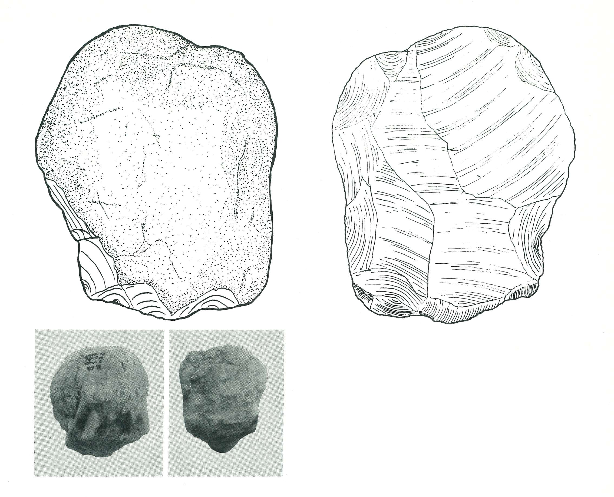
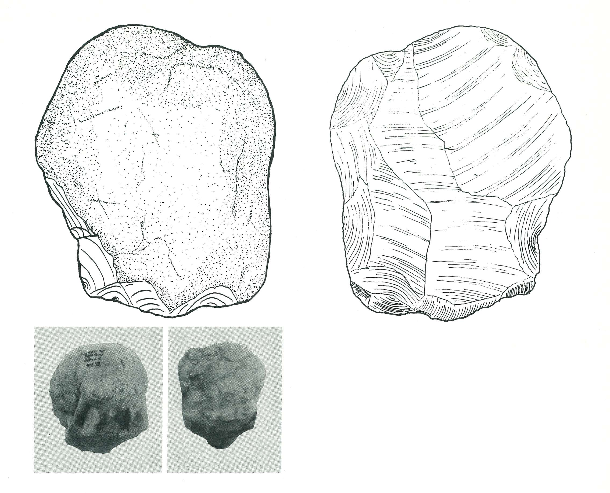
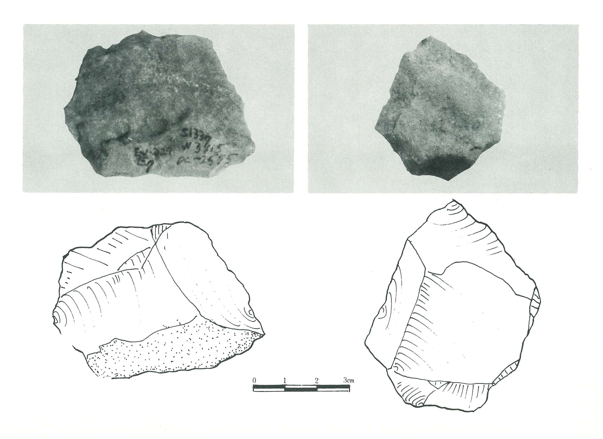
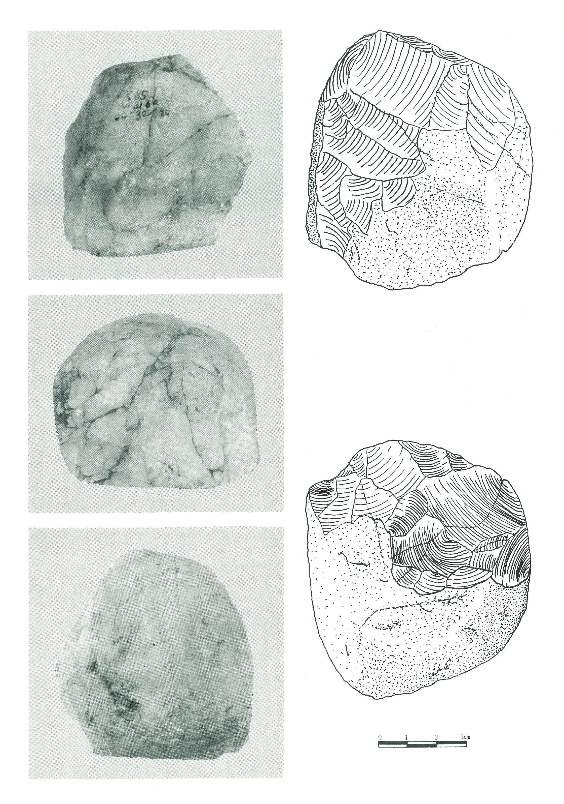
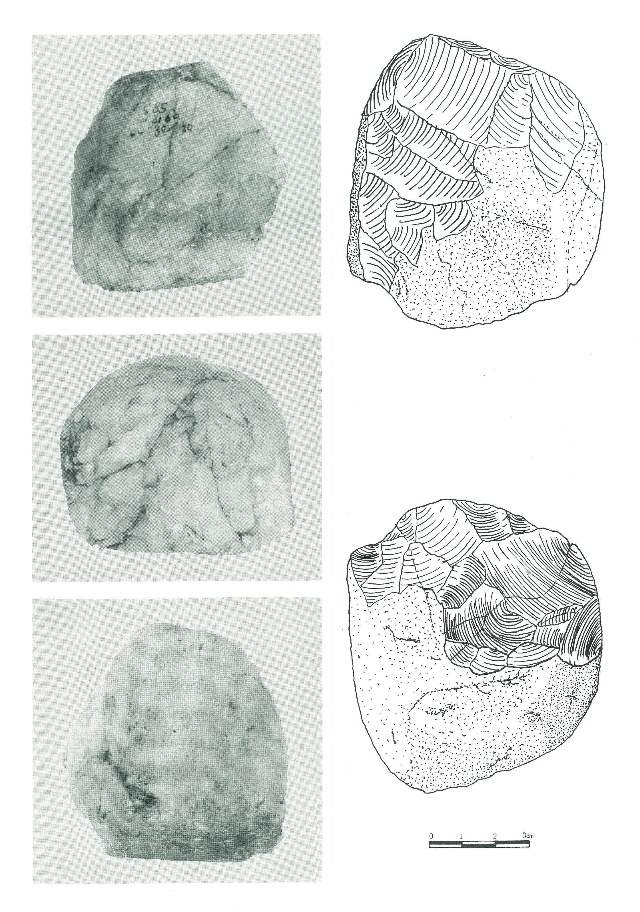
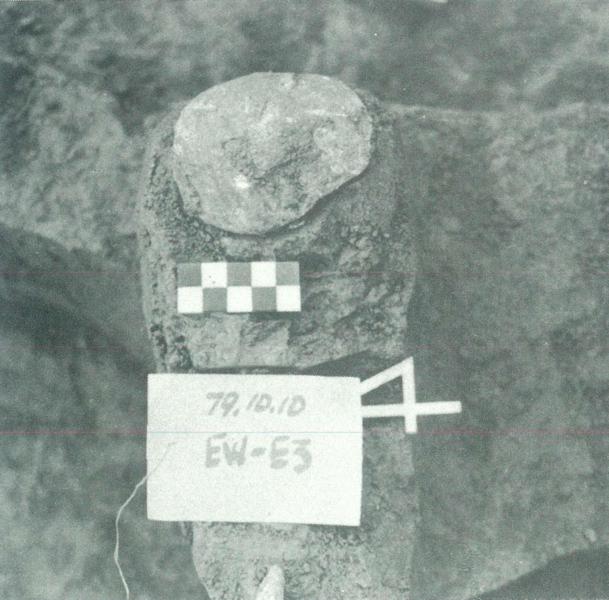
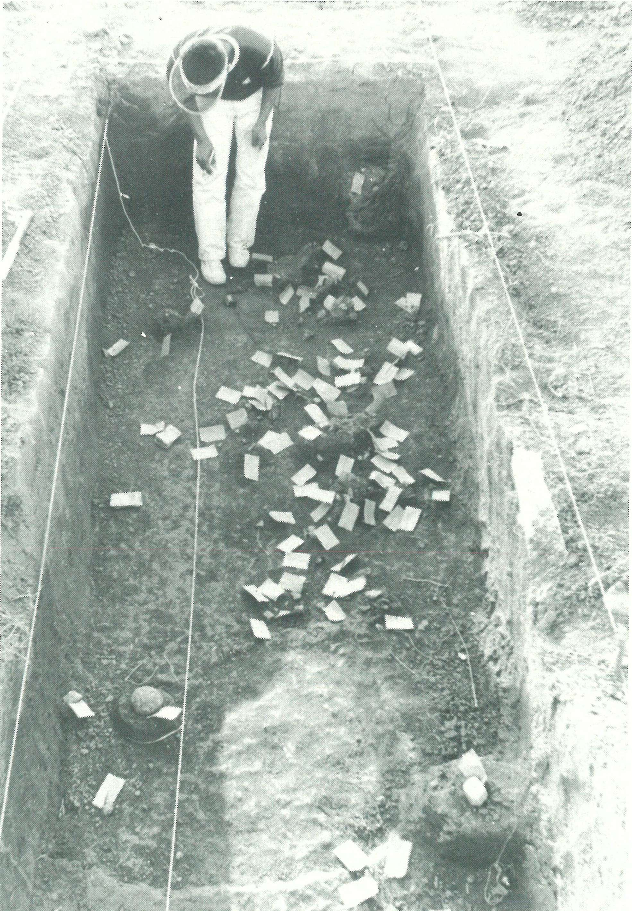
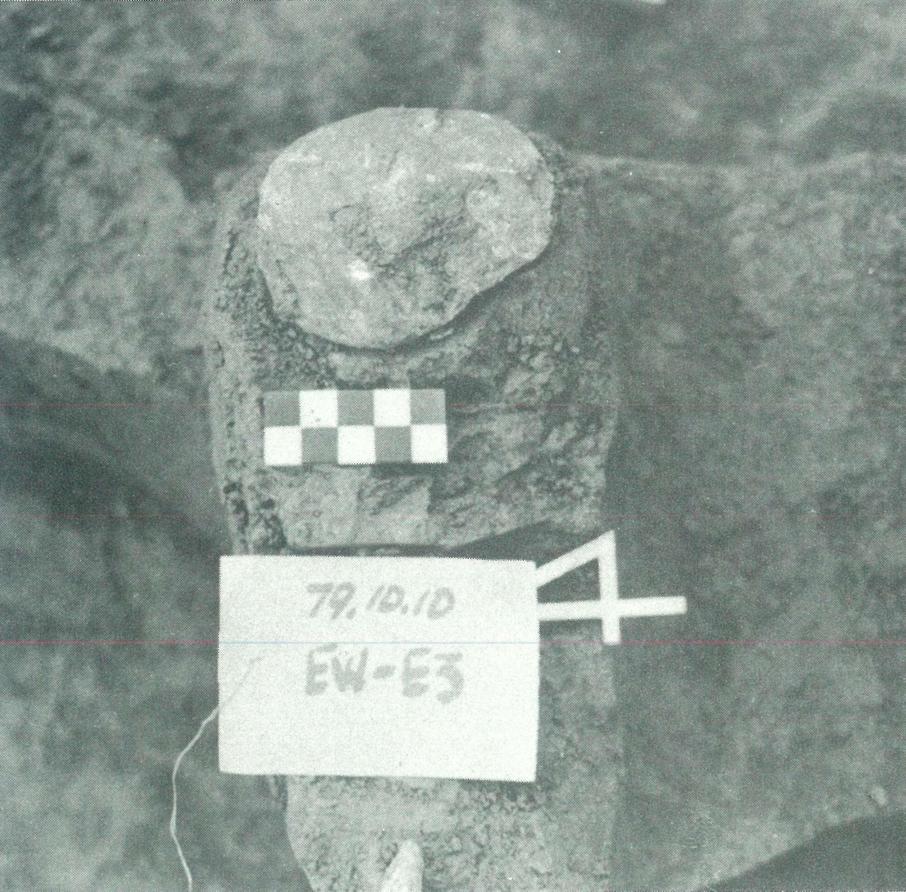
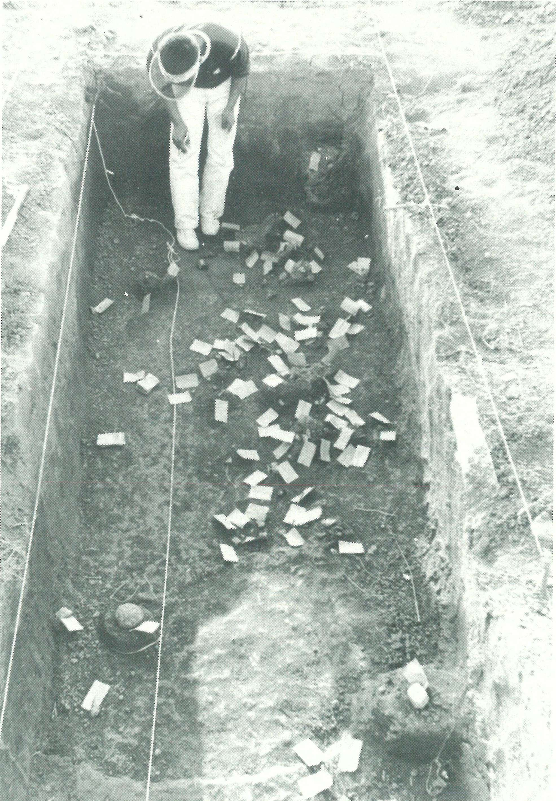

圖版 - Ⅱ地層
〔圖版 1〕 Scraper (E3 - 14)
〔圖版 2〕 Scraper (E3 - 14)
〔圖版 3〕 Scraper (W2 - 82)
〔圖版 4〕 Blade (W2 - 362)
 〔圖版 5〕 Chopper (W 2 - 379)

〔圖版 6〕 Scraper (E1 - 28)
〔圖版 7〕 Scraper (W2 - 380)
〔圖版 8〕 Scraper (E3 - 15)
〔圖版 9〕 Concave Scraper (E5 - 3)
〔圖版 10〕 Concave Scraper (E5 - 13)
〔圖版 11〕 Concave Scraper (E1 - 26)
〔圖版 12〕 Blade (E10 - 279)
〔圖版 5〕 Chopper (W 2 - 379)

〔圖版 6〕 Scraper (E1 - 28)
〔圖版 7〕 Scraper (W2 - 380)
〔圖版 8〕 Scraper (E3 - 15)
〔圖版 9〕 Concave Scraper (E5 - 3)
〔圖版 10〕 Concave Scraper (E5 - 13)
〔圖版 11〕 Concave Scraper (E1 - 26)
〔圖版 12〕 Blade (E10 - 279)
圖版 - Ⅲ. 地層
〔圖版 13〕 Chopping tool (E10 - 391)
〔圖版 14〕 Point (E8 - 122)

〔圖版 15〕 Knife Blade (E7 - 329)
〔圖版 16〕 Side blow edged knife (E8 - 129)
〔圖版 17〕 Side blow edged knife (E8 - 362)
〔圖版 18〕 End Scraper (E8 - 130)
〔圖版 19〕 End Scraper (E6 - 120)
〔圖版 20〕 Burin (E6 - 114)
〔圖版 21〕 Burin (E8 - 132)
〔圖版 22〕 Hammer Stone (E5 - 373)
〔圖版 23〕 Hammer Stone (E8 - 125)
〔圖版 24〕 Burin (E8 - 127)
〔圖版 25〕 Burin (E8 -139)
圖版 - Ⅳ 地層
〔圖版 26〕 Pick (E1 - 29)
 〔圖版 26〕 Pick (E1 - 29)
〔圖版 27〕 Pick (W3 - 63)
〔圖版 27〕 Pick (W3 - 63)
〔圖版 28〕 Pick (E5S9 - 372)
〔圖版 28〕 Pick (E5S9 - 372)
〔圖版 29〕 Pick (E1 - 152)
〔圖版 29〕 Pick (E1 - 152)

〔圖版 30〕 대형 Plane (E7 - 349)
〔圖版 31〕 Chopping tool (E7- 308)
〔圖版 31〕 Chopping tool (E7- 308)
〔圖版 32〕 소형 Scraper (E9 - 382)
〔圖版 33〕 Concave Scraper (E7 - 317)
〔圖版 34 Burin (E7 - 303)
〔圖版 35〕 Burin (E6 - 117)
〔圖版 36〕 미완성석기 (E4 - 146, E7 - 318)
〔圖版 26〕 Pick (E1 - 29)
〔圖版 27〕 Pick (W3 - 63)
〔圖版 27〕 Pick (W3 - 63)
〔圖版 28〕 Pick (E5S9 - 372)
〔圖版 28〕 Pick (E5S9 - 372)
〔圖版 29〕 Pick (E1 - 152)
〔圖版 29〕 Pick (E1 - 152)

〔圖版 30〕 대형 Plane (E7 - 349)
〔圖版 31〕 Chopping tool (E7- 308)
〔圖版 31〕 Chopping tool (E7- 308)
〔圖版 32〕 소형 Scraper (E9 - 382)
〔圖版 33〕 Concave Scraper (E7 - 317)
〔圖版 34 Burin (E7 - 303)
〔圖版 35〕 Burin (E6 - 117)
〔圖版 36〕 미완성석기 (E4 - 146, E7 - 318)
圖版 - Ⅴ 地層
〔圖版 37〕 Chopping tool (E3 - 94)
〔圖版 37〕 Chopping tool (E3 - 94)
〔圖版 38〕 Chopper (E5 - 295)
〔圖版 39〕 Chopper (E3 - 24)
〔圖版 40〕 Chopper (E4 - 281)
〔圖版 41〕 Hammer Stone (E2 - 112)
〔圖版 42〕 Scraper (E1 - 143)
〔圖版 43〕 Scraper (E1 - 141)
〔圖版 44〕 Blade (E10 - 392)
〔圖版 45〕 Blade (E3 - 382)
〔圖版 46〕 Blade (E4 - 288)
〔圖版 47〕 Blade (E4 - 81)
〔圖版 48〕 End Scraper (E7 - 301)
〔圖版 49〕 End Scraper (E2 - 109)
〔圖版 50〕 Burin (E2 - 107)
〔圖版 51〕 Burin (E2 - 22)
圖版 - 1次發掘
〔圖版 52〕 Chopping tool (E3S1 -Ⅰ- 32)
〔圖版 53〕 Bolas stone (E3S1 -Ⅰ- 131)
〔圖版 53〕 Bolas stone (E3S1 -Ⅰ- 131)
〔圖版 54〕 Hand-Axe (E3S1 -Ⅰ- 33)
〔圖版 54〕 Hand-Axe (E3S1 -Ⅰ- 33)
〔插圖 4〕 Sangoan 1：1 -2 Chikunka, Isoka, Luangwa valley, Zambia : 3 Mapangala, Luangwa
valley：1
〔插圖 5〕 全谷出土遺物
〔圖版 55〕 Steep edged plane (E3S1 -Ⅰ- 54)
〔圖版 55〕 Steep edged plane (E3S1 -Ⅰ- 54)
〔圖版 56〕 Hammer stone (E3S1 - Ⅰ - 128)
〔圖版 57〕 Sangoan Flake Tool Hand Axe
〔圖版 58〕 지상채취 Hand - Axe
〔圖版 58〕 지상채취 Hand - Axe
〔圖版 59〕 지상채취 소형 Hand Axe
〔圖版 59〕 지상채취 소형 Hand Axe
〔圖版 60〕 지상채취 Almond형 Hand Axe
 〔圖版 60〕 지상채취 Almond형 Hand Axe
〔圖版 61〕 지상채취 Hand-Axe
〔圖版 61〕 지상채취 Hand-Axe
〔圖版 62〕 Hand-Axe 비교
〔圖版 63〕 Hand-Axe 비교
〔圖版 64〕 지상채취 Chopper
〔圖版 64〕 지상채취 Chopper
〔圖版 65〕 기준層位
〔圖版 66〕 Pick出土層
〔圖版 67〕 Pick出土層
〔圖版 60〕 지상채취 Almond형 Hand Axe
〔圖版 61〕 지상채취 Hand-Axe
〔圖版 61〕 지상채취 Hand-Axe
〔圖版 62〕 Hand-Axe 비교
〔圖版 63〕 Hand-Axe 비교
〔圖版 64〕 지상채취 Chopper
〔圖版 64〕 지상채취 Chopper
〔圖版 65〕 기준層位
〔圖版 66〕 Pick出土層
〔圖版 67〕 Pick出土層
1次發掘
〔圖版 68〕 발굴전 유적의 그리트 설정
〔圖版 69〕 표토제거
〔圖版 70〕 현장침수
〔圖版 71〕 문화층 상부노출
〔圖版 72,73〕 유물출토
〔圖版 74,75〕 유물출토
2次 發 掘
 〔圖版 76〕 그리트 설치전의 발굴지
〔圖版 77〕 EW - W5Pit의 표토직각 암반노출
〔圖版 78〕 지층조사를 위한 종단그리드
〔圖版 79〕 E6Pit의 지층단면
〔圖版 80〕 E6Pit의 지층단면
〔圖版 81〕 E6Pit 암반노출상태
〔圖版 82〕 W3Pit의 Pick출토
〔圖版 83〕 출토된 Pick
〔圖版 84〕 나무뿌리화석과 유물의 출토상태
〔圖版 85〕 E1Pick 출토상태

〔圖版 86〕 Sand Stone Hand - Axe 출토상태
〔圖版 87〕 Chopper 출토상태
〔圖版 88〕 지층단면과 유물출토
〔圖版 89〕 W3Pit 유물출토상태
〔圖版 90〕 Scraper 출토
〔圖版 91〕 석재와 석기의 출토
〔圖版 92〕 E5S9Pit Pick의 출토광경
〔圖版 93〕 E5S9Pit Pick의 상태

〔圖版 94〕 W3Pit의 유물수거전 상태
〔圖版 95〕 E1Pit의 유물 수거전 상태
〔圖版 76〕 그리트 설치전의 발굴지
〔圖版 77〕 EW - W5Pit의 표토직각 암반노출
〔圖版 78〕 지층조사를 위한 종단그리드
〔圖版 79〕 E6Pit의 지층단면
〔圖版 80〕 E6Pit의 지층단면
〔圖版 81〕 E6Pit 암반노출상태
〔圖版 82〕 W3Pit의 Pick출토
〔圖版 83〕 출토된 Pick
〔圖版 84〕 나무뿌리화석과 유물의 출토상태
〔圖版 85〕 E1Pick 출토상태

〔圖版 86〕 Sand Stone Hand - Axe 출토상태
〔圖版 87〕 Chopper 출토상태
〔圖版 88〕 지층단면과 유물출토
〔圖版 89〕 W3Pit 유물출토상태
〔圖版 90〕 Scraper 출토
〔圖版 91〕 석재와 석기의 출토
〔圖版 92〕 E5S9Pit Pick의 출토광경
〔圖版 93〕 E5S9Pit Pick의 상태

〔圖版 94〕 W3Pit의 유물수거전 상태
〔圖版 95〕 E1Pit의 유물 수거전 상태